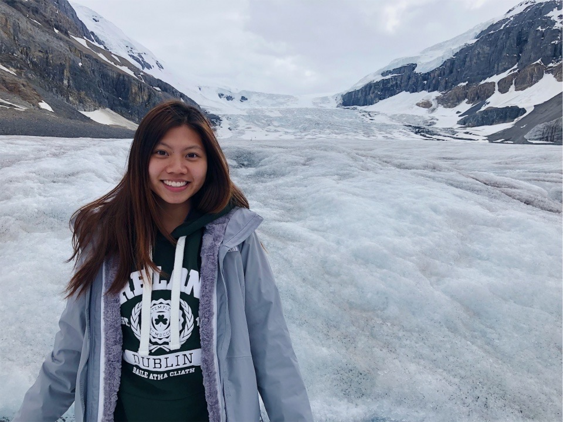

Hi, I'm Kate! I'm currently studying Information Systems and Business Administration at Carnegie Mellon University. I am a student ambassador at the Coulter Welcome Center and vice president of alpha Kappa Delta Phi, an asian-interest sorority on campus.
My favorite hobby is music -- both listening to and creating it! I enjoy making my parents laugh and cooking food for my friends. In the future, I hope to be eating good food.